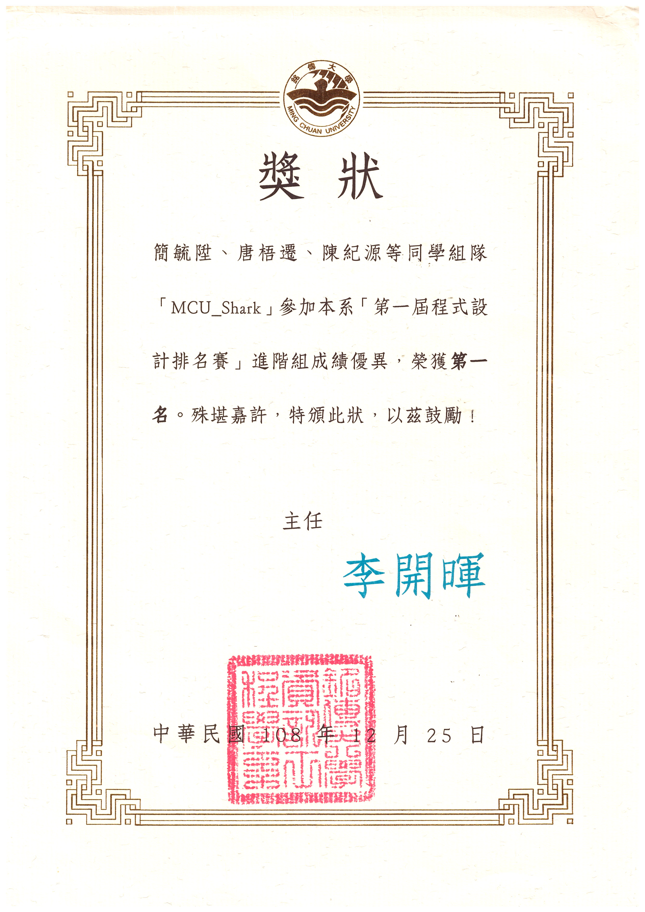
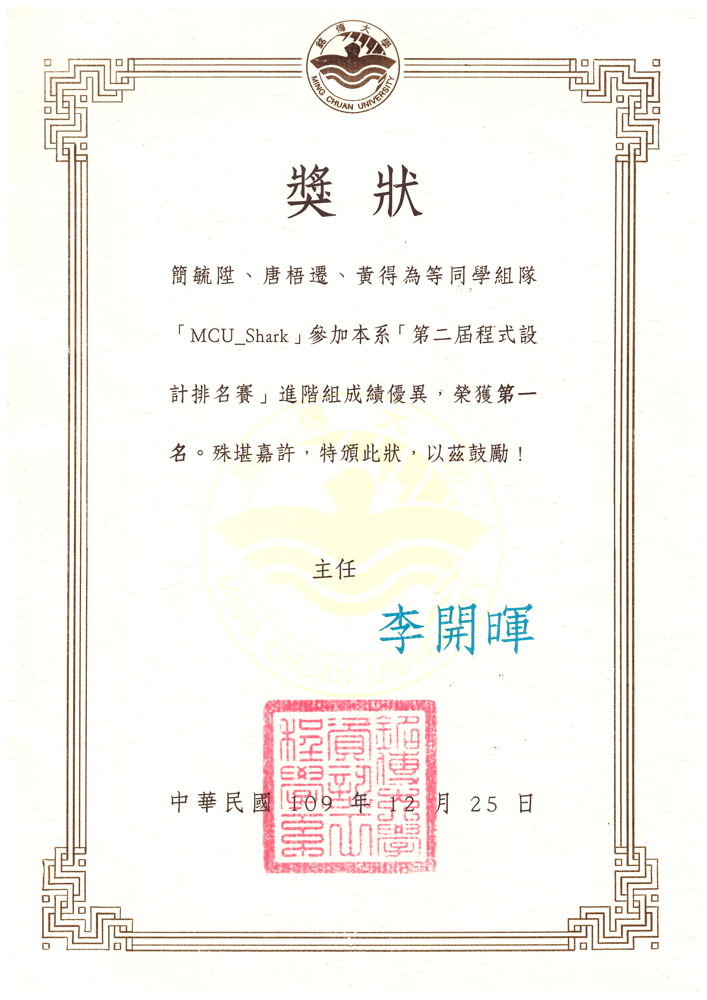

Awards & Honors · Dec 2019–
Dec 2020
First Place, MCU Programming Contest
Advanced Division · Dec 2019, Dec 2020
Media: [Certificates]
Certificates2




Awards & Honors · Dec 2019–
Dec 2020
Advanced Division · Dec 2019, Dec 2020

